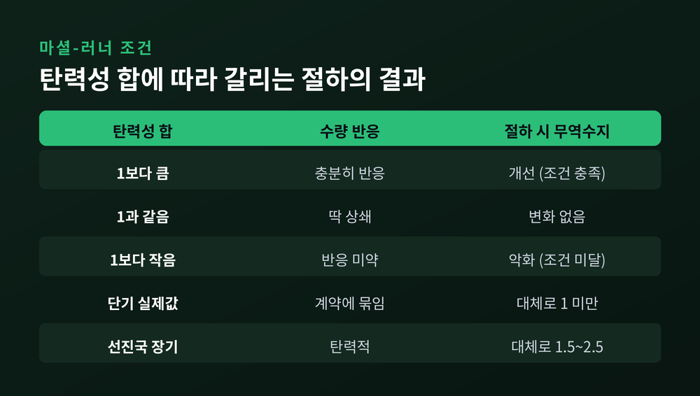
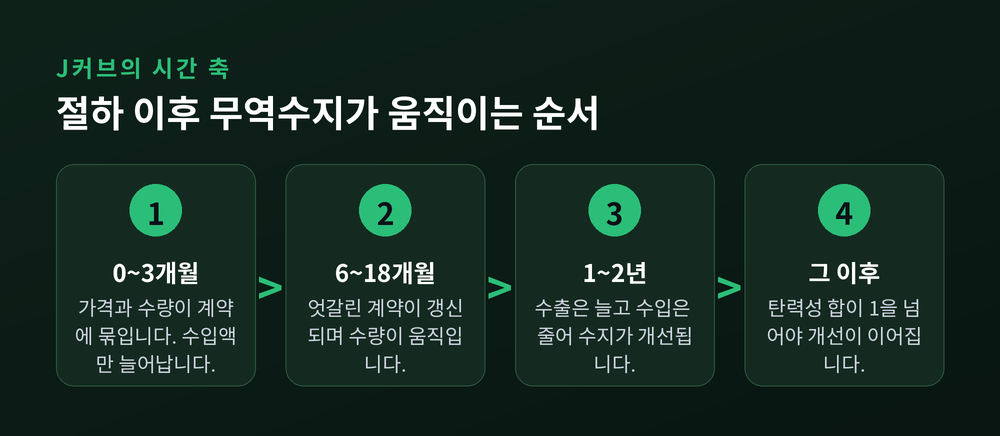
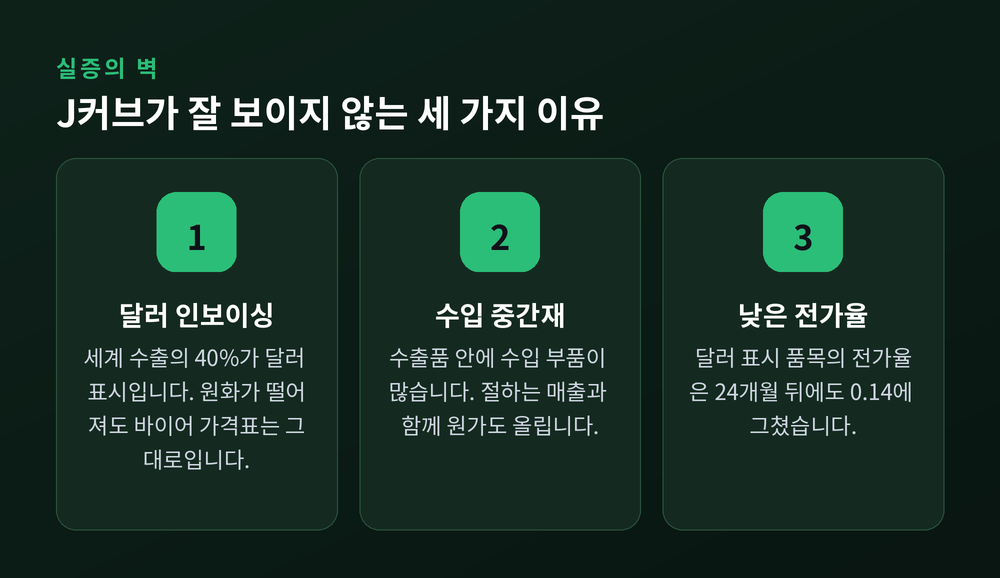
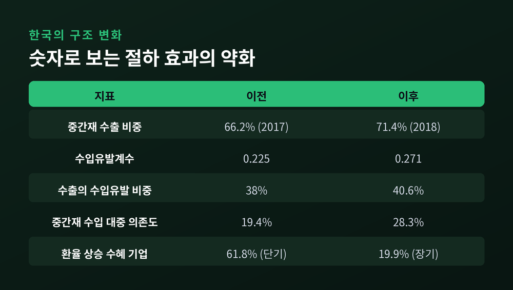

이번 글에서는 통화가 절하돼도 무역수지가 곧바로 개선되지 않는 이유를 정리해 보겠습니다. J커브 효과와 마셜-러너 조건이라는 두 개념이 중심입니다. 수식 기호는 최대한 말로 풀어 설명하겠습니다.
먼저 결론부터 세 줄로 적습니다.
무역수지는 수출액에서 수입액을 뺀 값입니다. 그런데 '액수'라는 말에 이미 답의 절반이 들어 있습니다.
수출액은 수출가격에 수출수량을 곱한 것입니다. 수입액은 수입가격에 수입수량을 곱한 것이고요. 여기서 한 가지 비대칭이 생깁니다. 수입품은 해외 통화로 값이 매겨져 있으니, 자국 통화로 환산하려면 환율을 한 번 더 곱해야 합니다.
정리하면 이렇습니다. 무역수지는 '수출가격 × 수출수량'의 합에서 '환율 × 해외통화 수입가격 × 수입수량'의 합을 뺀 값입니다.
환율이 오르면 어떻게 될까요. 절하 직후에는 가격도 수량도 거의 그대로입니다. 변한 것은 곱해지는 환율 하나뿐입니다. 그 환율은 수입 항에만 붙어 있습니다.
결과는 분명합니다. 수입액이 먼저 불어나고, 무역수지는 오히려 악화합니다.
이것이 J자의 아래로 파인 앞부분입니다. 가격효과가 수량효과보다 먼저 도착하기 때문에 생기는 일입니다.
수량은 언제 움직일까요. 그리고 얼마나 움직여야 무역수지가 개선될까요. 이 질문에 답한 것이 마셜-러너 조건입니다.
조건은 간단합니다. 수출 수요의 가격탄력성과 수입 수요의 가격탄력성을 각각 절댓값으로 잡아 더했을 때, 그 합이 1보다 커야 절하가 무역수지를 개선합니다.
가격탄력성이라는 말이 낯설 수 있습니다. 가격이 1퍼센트 변할 때 수량이 몇 퍼센트 변하는지를 재는 숫자라고 생각하시면 됩니다. 1보다 크면 탄력적, 1보다 작으면 비탄력적입니다.
왜 하필 '합이 1'일까요. 무역수지를 움직이는 것이 수량이 아니라 금액이기 때문입니다.
절하가 일어나면 수입품의 국내 가격이 오릅니다. 수입 수량이 충분히 줄지 않으면 수입에 쓰는 돈은 오히려 늘어납니다. 같은 시각 수출품의 외화 표시 가격은 내려갑니다. 수출 수량이 충분히 늘지 않으면 벌어들이는 외화는 오히려 줄어듭니다.
두 개의 '충분히'를 하나로 합친 문턱 — 그것이 탄력성의 합이 1이라는 기준입니다.
실증 추정치는 어떨까요. Houthakker와 Magee가 1969년에 내놓은 연구 이래, 선진국의 장기 수출입 탄력성 합은 대체로 1.5에서 2.5 사이로 보고돼 왔습니다. 조건을 여유 있게 넘는 수준입니다. 다만 개도국은 사정이 갈립니다. 합이 1에 못 미치는 사례도 여럿 보고됐습니다.
한 가지 짚고 넘어가겠습니다. 마셜-러너 조건은 꽤 강한 전제 위에 서 있습니다. 처음 무역수지가 균형이라고 가정하고, 공급이 얼마든지 늘어날 수 있다고 가정하며, 자본 이동도 무시합니다. 교과서의 출발점이지 현실의 완결된 설명은 아닙니다.

그렇다면 수량은 왜 곧바로 반응하지 않을까요. 세 가지 시차가 겹쳐 있기 때문입니다.
첫째, 계약 시차입니다. 수출입의 가격과 수량은 대개 미리 계약으로 정해집니다. 계약 기간은 업종마다 다르지만 1년을 넘기는 경우도 흔합니다. 국제금융 교과서는 이 때문에 대략 6개월에서 18개월 사이에는 많은 품목의 현지 가격과 수량이 고정된 채로 남는다고 설명합니다. 게다가 계약은 시점이 엇갈려 있어 매 분기 일부만 갱신됩니다. 조정이 급격하지 않고 천천히 스며드는 이유입니다.
둘째, 인식과 대체의 시차입니다. 수입품이 비싸졌다는 사실을 알아차리는 데 시간이 걸립니다. 알아차린 뒤 대체재를 찾는 데 또 시간이 걸립니다. 부품 하나를 바꾸려면 시험과 승인 절차를 거쳐야 하는 산업도 많습니다.
셋째, 생산 시차입니다. 수입가격 상승은 국내 생산을 늘릴 좋은 유인입니다. 그러나 설비를 들이고 인력을 뽑고 생산량을 실제로 끌어올리는 데는 분기 단위의 시간이 필요합니다.
전체 소요 기간은 얼마나 될까요. 교과서의 어림 기준은 1년에서 2년입니다. 다만 이 숫자는 정답이 아닙니다. 과거 연구들은 절하 이후 첫 9~12개월 동안 수량효과가 약하거나 아예 없다고 봤습니다. 반면 구조적 중력모형을 쓴 비교적 최근 연구는 더 짧은 시차를 보고합니다. 절하 후 두 분기 동안 무역수지가 악화하고, 그 효과가 네 분기까지 이어진 뒤 장기에 개선된다는 결과입니다.
추정치가 이렇게 갈린다는 사실 자체가 하나의 정보입니다. J커브의 깊이와 길이는 나라마다, 시기마다 다릅니다.

여기까지가 교과서의 이야기입니다. 그런데 실제 데이터에서 J커브는 생각보다 자주 흐릿합니다. 두 가지 구조적 이유가 있습니다.
첫째, 달러 인보이싱입니다. 전통 모형은 수출가격이 수출국 통화로 매겨진다고 가정합니다. 현실은 다릅니다. 세계 교역의 청구서는 소수의 통화로 발행됩니다.
숫자를 보시면 놀라실 겁니다. 세계 수출의 약 40퍼센트가 달러로 인보이싱되는데, 미국이 세계 수출에서 차지하는 비중은 약 12퍼센트입니다. 수입 쪽은 더합니다. 달러 인보이싱 비중이 약 43퍼센트인 반면 미국의 세계 수입 비중은 약 9퍼센트입니다. 달러 사용이 미국의 경제 규모보다 서너 배 큰 셈입니다.
이를 정면으로 다룬 연구가 Gopinath와 공저자들의 '지배통화 패러다임'입니다. 세계 교역의 91퍼센트를 포괄하는 2,500개 이상 국가쌍 데이터로 검증한 결과, 원자재를 뺀 교역조건은 환율과 사실상 무상관이었습니다. 가격 전가와 교역탄력성 회귀에서 달러 환율이 양자 환율을 압도했고, 그 효과는 수입의 달러 인보이싱 비중이 높을수록 커졌습니다. 이 논문은 2020년 American Economic Review에 실렸습니다.
전가율 숫자는 더 직관적입니다. 달러로 값이 매겨진 품목의 환율 전가율은 단기에 거의 0이고, 24개월이 지나도 0.14에 머물렀습니다. 달러 외 통화로 매겨진 품목은 단기에 거의 1, 24개월 시점에 0.92였습니다. 같은 환율 변동인데 청구서 통화에 따라 결과가 정반대인 것입니다.
정리하면 이렇습니다. 원화가 절하돼도 수출 청구서가 달러로 쓰여 있다면, 해외 바이어가 보는 가격표는 거의 그대로입니다. J커브 후반부의 동력인 수출 수량 증가가 애초에 잘 작동하지 않습니다.
둘째, 글로벌 가치사슬과 수입 중간재입니다. 오늘날 수출품 안에는 수입한 부품과 원자재가 잔뜩 들어 있습니다. 그러면 절하는 매출만 올리는 것이 아니라 원가도 함께 올립니다. 유럽중앙은행 연구진은 1990년대 중반 이후 수입물가 환율전가율이 떨어진 현상의 약 절반을 가치사슬 참여 확대로 설명할 수 있다고 분석했습니다. 미 연준 연구는 한 발 더 나갑니다. 가치사슬 복잡도가 최상위권인 기업들은 자국 통화가 절하될 때 오히려 수출이 줄어들 수 있다는 것입니다.

예전엔 절하가 꽤 잘 들었습니다. 1997~98년 외환위기 때 원화가 크게 떨어진 뒤 무역수지가 대규모 적자에서 큰 폭 흑자로 돌아선 일은 마셜-러너 조건이 작동한 사례로 자주 인용됩니다. 다만 당시 흑자 전환에는 급격한 내수 위축에 따른 수입 감소도 크게 작용했다는 점을 함께 봐야 합니다.
지금은 구조가 달라졌습니다.
한국의 중간재 수출 비중은 2017년 66.2퍼센트에서 2018년 71.4퍼센트로 올랐습니다. 2017년 기준 글로벌 가치사슬 참여율은 55퍼센트로, OECD 주요국 가운데 높은 편입니다. 수입유발계수는 0.225에서 0.271로 상승했고, 수출이 유발하는 수입의 비중도 38퍼센트에서 40.6퍼센트로 늘었습니다. 중간재 수입의 중국 의존도는 10년 사이 19.4퍼센트에서 28.3퍼센트로 8.9퍼센트포인트 높아졌습니다.
가장 인상적인 숫자는 따로 있습니다. 한국무역협회 분석에 따르면, 환율이 오를 때 영업이익률이 개선되는 수출기업의 비중은 단기적으로 61.8퍼센트였습니다. 그런데 장기 간접 파급효과까지 반영하자 그 비중이 19.9퍼센트로 줄었습니다. 원가 상승이 시차를 두고 되돌아오기 때문입니다.
한국을 대상으로 한 J커브 실증 연구도 결과가 한결같지 않습니다. 18개 교역상대국을 비선형 모형으로 검정한 연구에서는 실질환율 변화의 장기 효과가 양(+)으로 나온 경우가 11개국이었습니다. 엄밀한 J자 형태는 미국과 인도네시아 등 일부 상대국에서만 관측됐습니다.

절하는 즉효약이 아닙니다. 효과가 나타나더라도 최소 몇 분기, 통상 1~2년의 시차를 지나야 합니다. 그 사이에는 오히려 나빠지는 구간을 통과합니다.
먼저 도착하는 것은 수입물가입니다. 절하는 수입 인플레이션을 부르고, 그 물가 상승은 다시 수출 경쟁력을 깎습니다. 애초에 기대했던 효과의 일부를 스스로 갉아먹는 셈입니다.
환율만으로 경상수지를 설명할 수도 없습니다. 국내 소비와 성장률, 해외 수요, 물가, 기업의 환헤지 여부가 모두 끼어듭니다. 영국이 2007~09년 파운드 급락을 겪고도 경상수지 개선이 뚜렷하지 않았던 사례가 이를 잘 보여줍니다.
그래서 남는 함의는 이렇습니다. 달러가 청구서를 지배하고 부품이 국경을 여러 번 넘나드는 세계에서는, 환율 조정보다 생산성과 품질, 공급망 다변화가 더 근본적인 경로에 가깝습니다.
정리하면 이렇습니다.
J커브는 환율이 무역수지에 닿기까지의 '지연'을 그린 그림이고, 마셜-러너 조건은 그 지연 끝에 개선이 오려면 무엇이 필요한지를 적은 문턱입니다. 둘을 함께 놓고 봐야 환율 뉴스가 제대로 읽힙니다.
"환율은 즉시 움직이지만, 무역은 계약의 속도로 움직입니다."
물론 이 설명에도 한계는 있습니다. 앞서 본 것처럼 J커브가 아예 나타나지 않는 나라와 시기도 있습니다. 어떤 모형도 현실을 다 담지는 못합니다.
다만 환율이 오른 다음 달 무역수지가 왜 더 나빠졌느냐고 물으신다면, 이제는 이렇게 답하시면 되겠습니다. 아직 계약이 갱신되지 않았을 뿐이라고요.